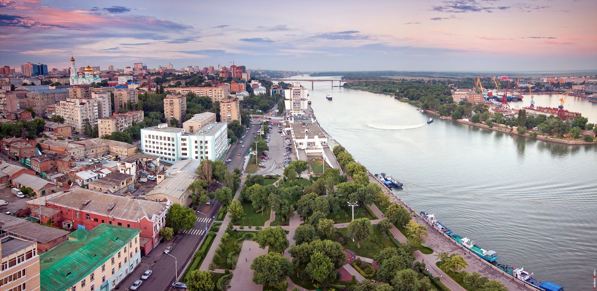

Ростов-на-Дону – административный центр Ростовской области и Южного федерального округа России с населением более 1 млн человек. Город расположен на юго-востоке Восточно-Европейской равнины, на берегах реки Дон, в 46 км от места ее впадения в Азовское море. Площадь города составляет 348,5 кв.км, расстояние до Москвы - 1076 км.

Датой основания Ростова-на-Дону считается 1749 год, когда российская императрица Елизавета Петровна подписала Указ об учреждении в устье реки Темерник государственной таможни. После этого здесь появляется порт, а в 1761 году - начинается строительство военной крепости Святого Димитрия Ростовского. Выгодное географическое положение способствовало экономическому развитию Ростова. К своему 100-летию город насчитывал около 15 тысяч жителей, а к XX веку в нем проживало уже свыше 110 тысяч человек. Основой экономики Ростова была торговля, а сам город называли купеческим. Тем не менее, к началу XX века в Ростове действовало уже более 100 предприятий, каждое третье из которых принадлежало иностранному капиталу. До 1917 года Ростов был третьим городом в России по величине внешнеэкономического торгового товарооборота. К концу 30-х годов по численности населения и уровню экономического развития он входил в десятку крупнейших городов Советского Союза.
В героическую летопись Великой Отечественной войны Ростов вошел как город, где Красная Армия перешла от обороны в наступление. Ростов-на-Дону в планах фашистского командования был стратегической целью – недаром Геббельс назвал его «Воротами Кавказа». Но, именно здесь, у «Ворот Кавказа» в ноябре 41-го Вермахт потерпел первое крупное поражение. В период оккупации города фашисты расстреляли и замучили десятки тысяч мирных жителей, около 50 тысяч человек угнали в рабство. В развалины были превращены центральные районы города, взорваны и сожжены здания театров, институтов, школ и больниц. Из 270 фабрики заводов уцелело только шесть. Однако, благодаря самоотверженному труду ростовчан столица Дона была восстановлена из руин и стала еще более красивой.
В 1970 году Указом Верховного Совета СССР город Ростова-на-Дону был награжден орденом Ленина, в 1982 году Указом Президиума Верховного Совета СССР награжден орденом Отечественной войны I степени. В преддверии празднования 63-й годовщины Победы в Великой Отечественной войне Ростову-на-Дону было присвоено почетное звание «Город воинской славы». Сегодня Ростов – это один из наиболее крупных мегаполисов современной России, политический, экономический, культурный и научный центр юга страны, важный узел транспортных магистралей.